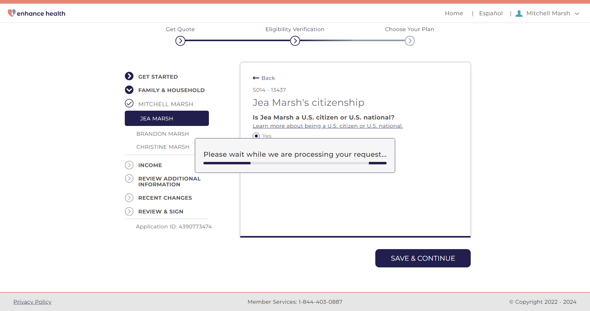
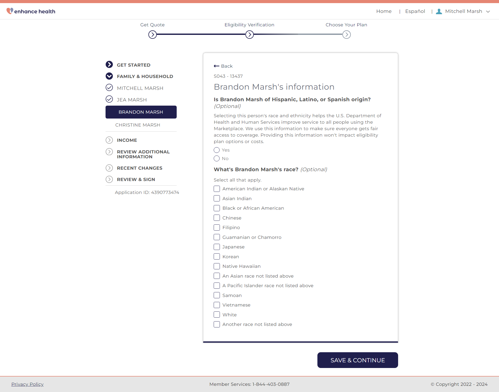
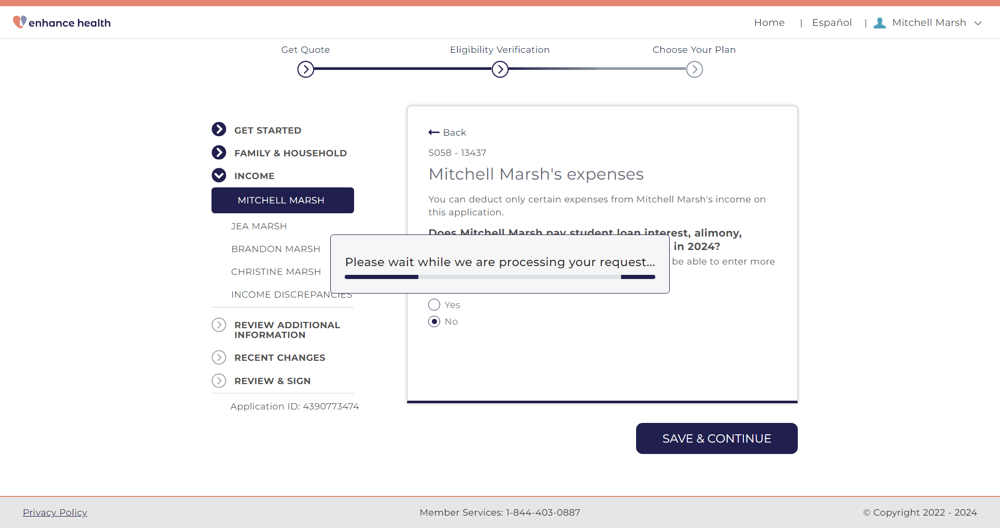
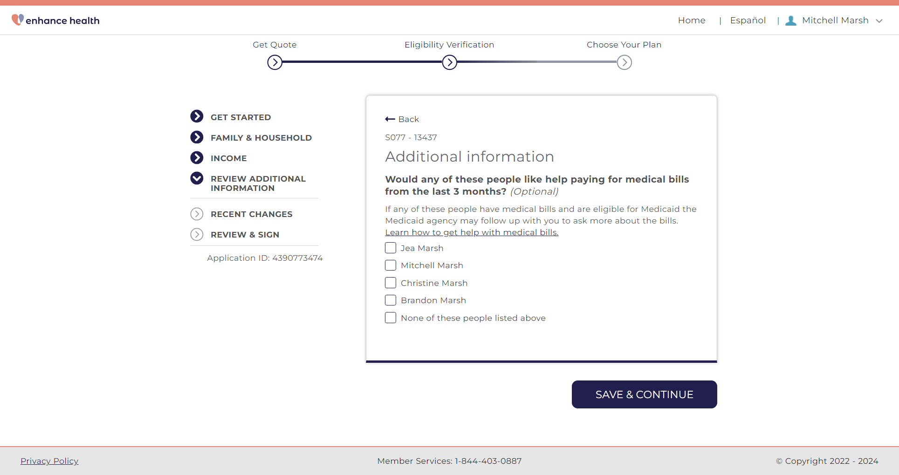

Tests
1 test(s) passed
0 test(s) failed, 0 others
Timeline (seconds)
-
PTC117 Wednesday, May 15, 2024, 08:31 AM (PDT) passWednesday, May 15, 2024, 08:31 AM (PDT) Wednesday, May 15, 2024, 08:36 AM (PDT) 0h 5m 1s+127msPartner Test Case 117
Status Timestamp Details info_outline 8:31:18 AM Opening URL: https://enhanceqa.jet-insure.com/qoutedeeplink?PartnerCode=ENHANCE info_outline 8:31:21 AM Screen Capture 
info_outline 8:31:22 AM Entering Email EDE: amj_autoqa@yopmail.com info_outline 8:31:22 AM Entering password EDE: Pass@word123456 info_outline 8:31:26 AM Screen Capture 
info_outline 8:31:35 AM Screen Capture info_outline 8:31:37 AM Screen Capture info_outline 8:31:40 AM Screen Capture 
info_outline 8:31:42 AM Screen Capture info_outline 8:31:42 AM ---------------------SCREEN S001---------------------------- info_outline 8:31:42 AM Getting s001 question text: Do you need coverage for yourself? info_outline 8:31:42 AM Entering first name: Mitchell info_outline 8:31:42 AM Entering Date of birth: 03/25/1994 info_outline 8:31:43 AM Entering middle name: info_outline 8:31:43 AM Entering last name: Marsh info_outline 8:31:46 AM Screen Capture info_outline 8:31:47 AM Screen Capture 
info_outline 8:31:47 AM ---------------------SCREEN S002---------------------------- info_outline 8:31:49 AM Entering street address: 9001 NW 200th Street Rd info_outline 8:31:49 AM Getting s002 question text: What's your home address? info_outline 8:31:49 AM Expected: What's your home address? info_outline 8:31:49 AM Found: What's your home address? info_outline 8:31:49 AM Verified: What's your home address? on S002 info_outline 8:31:49 AM State selected: FL info_outline 8:31:49 AM Entering city: Micanopy info_outline 8:31:50 AM Entering zipCode: 25456 info_outline 8:31:50 AM Entering zip code: 32667 info_outline 8:31:50 AM Clicking county drop down info_outline 8:31:50 AM Clicking county info_outline 8:31:52 AM Screen Capture 
info_outline 8:31:54 AM Screen Capture info_outline 8:31:56 AM Screen Capture info_outline 8:31:56 AM ---------------------SCREEN S003---------------------------- info_outline 8:31:58 AM Getting s003 question text: Is this also your mailing address? Learn how mailing address affects coverage. info_outline 8:31:58 AM Expected: Is this also your mailing address? info_outline 8:31:58 AM Found: Is this also your mailing address? info_outline 8:31:58 AM Verified: Is this also your mailing address? on S003 info_outline 8:32:00 AM Screen Capture info_outline 8:32:02 AM Screen Capture 
info_outline 8:32:02 AM ---------------------SCREEN S004---------------------------- info_outline 8:32:02 AM Entering phone number: (898) 788-4538 info_outline 8:32:03 AM Getting s004 question text: What's your contact information? info_outline 8:32:03 AM Expected: What's your contact information? info_outline 8:32:03 AM Found: What's your contact information? info_outline 8:32:03 AM Verified: What's your contact information? on S004 info_outline 8:32:05 AM Screen Capture info_outline 8:32:06 AM Screen Capture 
info_outline 8:32:06 AM ---------------------SCREEN S005---------------------------- info_outline 8:32:06 AM Getting s005 question text: What's your preferred language? info_outline 8:32:06 AM Expected: What's your preferred language? info_outline 8:32:06 AM Found: What's your preferred language? info_outline 8:32:06 AM Verified: What's your preferred language? on S005 info_outline 8:32:08 AM Screen Capture 
info_outline 8:32:10 AM Screen Capture info_outline 8:32:10 AM ---------------------SCREEN S006---------------------------- info_outline 8:32:10 AM Getting s006 question text: How would you like to get notices about your application? info_outline 8:32:10 AM Expected: How would you like to get notices about your application? info_outline 8:32:10 AM Found: How would you like to get notices about your application? info_outline 8:32:10 AM Verified: How would you like to get notices about your application? on S006 info_outline 8:32:12 AM Screen Capture 
info_outline 8:32:14 AM Screen Capture info_outline 8:32:14 AM ---------------------SCREEN S007---------------------------- info_outline 8:32:14 AM Getting s007 question text: Is a professional helping you complete your application? info_outline 8:32:14 AM Expected: Is a professional helping you complete your application? info_outline 8:32:14 AM Found: Is a professional helping you complete your application? info_outline 8:32:14 AM Verified: Is a professional helping you complete your application? on S007 info_outline 8:32:16 AM Screen Capture 
info_outline 8:32:17 AM Screen Capture info_outline 8:32:17 AM ---------------------SCREEN S008---------------------------- info_outline 8:32:18 AM Getting s008 question text: Do you want to find out if you can get help paying for health coverage? info_outline 8:32:18 AM Expected: Do you want to find out if you can get help paying for health coverage? info_outline 8:32:18 AM Found: Do you want to find out if you can get help paying for health coverage? info_outline 8:32:18 AM Verified: Do you want to find out if you can get help paying for health coverage? on S008 info_outline 8:32:20 AM Screen Capture info_outline 8:32:22 AM Screen Capture info_outline 8:32:22 AM ---------------------SCREEN S010---------------------------- info_outline 8:32:23 AM Getting Application Id: text: Application ID: 4390773474 info_outline 8:32:23 AM Entering Date of birth: 03/28/1994 info_outline 8:32:24 AM Entering first name: Jea info_outline 8:32:24 AM Entering last name: Marsh info_outline 8:32:25 AM Relation selected: Spouse info_outline 8:32:26 AM Entering Date of birth: 03/17/2019 info_outline 8:32:26 AM Entering first name: Christine info_outline 8:32:26 AM Entering last name: Marsh info_outline 8:32:27 AM Relation selected: Son/daughter (including adopted child) info_outline 8:32:28 AM Relation selected: Son/daughter (including adopted child) info_outline 8:32:29 AM Entering Date of birth: 04/10/2018 info_outline 8:32:29 AM Entering first name: Brandon info_outline 8:32:29 AM Entering last name: Marsh info_outline 8:32:30 AM Relation selected: Son/daughter (including adopted child) info_outline 8:32:31 AM Relation selected: Brother/sister (including half & step sibling) info_outline 8:32:35 AM Screen Capture info_outline 8:32:37 AM Screen Capture info_outline 8:32:37 AM ---------------------SCREEN S010A---------------------------- info_outline 8:32:37 AM Getting s010A question text: Remove, or change coverage needs? info_outline 8:32:37 AM Expected: Remove, or change coverage needs? info_outline 8:32:37 AM Found: Remove, or change coverage needs? info_outline 8:32:37 AM Verified: Remove, or change coverage needs? on S010A info_outline 8:32:39 AM Screen Capture 
info_outline 8:32:40 AM Screen Capture info_outline 8:32:40 AM ---------------------SCREEN S012----------------------------- info_outline 8:32:43 AM Getting s012 question text: What is Mitchell Marsh's Social Security Number (SSN)? info_outline 8:32:43 AM Expected: What is Mitchell Marsh's Social Security Number (SSN)? info_outline 8:32:43 AM Found: What is Mitchell Marsh's Social Security Number (SSN)? info_outline 8:32:43 AM Verified: What is Mitchell Marsh's Social Security Number (SSN)? on S012 info_outline 8:32:43 AM Entering SSN number: 295079952 info_outline 8:32:43 AM Getting s012 same name question text: Is Mitchell Marsh the same name that appears on his Social Security card? info_outline 8:32:43 AM Expected: Is Mitchell Marsh the same name that appears on his Social Security card? info_outline 8:32:43 AM Found: Is Mitchell Marsh the same name that appears on his Social Security card? info_outline 8:32:43 AM Verified: Is Mitchell Marsh the same name that appears on his Social Security card? on S012 info_outline 8:32:45 AM Screen Capture info_outline 8:32:47 AM Screen Capture info_outline 8:32:47 AM ---------------------SCREEN S014---------------------------- info_outline 8:32:47 AM Getting s014 question text: Is Mitchell Marsh a U.S. citizen or U.S. national? info_outline 8:32:47 AM Expected: Is Mitchell Marsh a U.S. citizen or U.S. national? info_outline 8:32:47 AM Found: Is Mitchell Marsh a U.S. citizen or U.S. national? info_outline 8:32:47 AM Verified: Is Mitchell Marsh a U.S. citizen or U.S. national? on S014 info_outline 8:32:49 AM Screen Capture info_outline 8:32:50 AM Screen Capture info_outline 8:32:50 AM ---------------------SCREEN S026---------------------------- info_outline 8:32:50 AM Getting s026 question text: What’s Mitchell Marsh's marital status? info_outline 8:32:50 AM Expected: What’s Mitchell Marsh's marital status? info_outline 8:32:50 AM Found: What’s Mitchell Marsh's marital status? info_outline 8:32:50 AM Verified: What’s Mitchell Marsh's marital status? on s026 info_outline 8:32:52 AM Screen Capture 
info_outline 8:32:54 AM Screen Capture info_outline 8:32:54 AM ---------------------SCREEN S027---------------------------- info_outline 8:32:56 AM Getting s027 question text: Does Mitchell Marsh plan to file a joint federal income tax return with spouse for 2024? Learn more about joint tax filing. info_outline 8:32:56 AM Expected: Does Mitchell Marsh plan to file a joint federal income tax return with spouse for 2024? info_outline 8:32:56 AM Found: Does Mitchell Marsh plan to file a joint federal income tax return with spouse for 2024? info_outline 8:32:56 AM Verified: Does Mitchell Marsh plan to file a joint federal income tax return with spouse for 2024? on s027 info_outline 8:32:56 AM Getting s027 Dependent question text: Will Mitchell Marsh and Jea Marsh claim any dependents on their joint federal income tax return for 2024? Learn more about dependents. info_outline 8:32:56 AM Expected: Will Mitchell Marsh and Jea Marsh claim any dependents on their joint federal income tax return for 2024? info_outline 8:32:56 AM Found: Will Mitchell Marsh and Jea Marsh claim any dependents on their joint federal income tax return for 2024? info_outline 8:32:56 AM Verified: Will Mitchell Marsh and Jea Marsh claim any dependents on their joint federal income tax return for 2024? on s027 Dependent info_outline 8:32:57 AM Getting Screen Questions text: Who are Mitchell Marsh and Jea Marsh's dependents? info_outline 8:32:57 AM Verified: Who are Mitchell Marsh and Jea Marsh's dependents? on S0 info_outline 8:32:59 AM Screen Capture info_outline 8:33:01 AM Screen Capture info_outline 8:33:01 AM ---------------------SCREEN S041A---------------------------- info_outline 8:33:01 AM Getting s041A question text: Do all of these people live together at this address? Learn how home address affects coverage. info_outline 8:33:01 AM Expected: Do all of these people live together at this address? info_outline 8:33:01 AM Found: Do all of these people live together at this address? info_outline 8:33:01 AM Verified: Do all of these people live together at this address? on s041A info_outline 8:33:03 AM Screen Capture info_outline 8:33:04 AM Screen Capture info_outline 8:33:04 AM ---------------------SCREEN S038---------------------------- info_outline 8:33:04 AM Getting s038 question text: Is Mitchell Marsh the main person taking care of any of these children? info_outline 8:33:04 AM Expected: Is Mitchell Marsh the main person taking care of any of these children? info_outline 8:33:04 AM Found: Is Mitchell Marsh the main person taking care of any of these children? info_outline 8:33:04 AM Verified: Is Mitchell Marsh the main person taking care of any of these children? on S038 info_outline 8:33:07 AM Screen Capture info_outline 8:33:09 AM Screen Capture info_outline 8:33:09 AM ---------------------SCREEN S042A---------------------------- info_outline 8:33:12 AM Screen Capture info_outline 8:33:14 AM Screen Capture 
info_outline 8:33:14 AM ---------------------SCREEN S043---------------------------- info_outline 8:33:16 AM Screen Capture info_outline 8:33:17 AM Screen Capture info_outline 8:33:17 AM ---------------------SCREEN S012----------------------------- info_outline 8:33:19 AM Getting s012 question text: What is Jea Marsh's Social Security Number (SSN)? info_outline 8:33:19 AM Expected: What is Jea Marsh's Social Security Number (SSN)? info_outline 8:33:19 AM Found: What is Jea Marsh's Social Security Number (SSN)? info_outline 8:33:19 AM Verified: What is Jea Marsh's Social Security Number (SSN)? on S012 info_outline 8:33:19 AM Entering SSN number: 295080894 info_outline 8:33:20 AM Getting s012 same name question text: Is Jea Marsh the same name that appears on her Social Security card? info_outline 8:33:20 AM Expected: Is Jea Marsh the same name that appears on her Social Security card? info_outline 8:33:20 AM Found: Is Jea Marsh the same name that appears on her Social Security card? info_outline 8:33:20 AM Verified: Is Jea Marsh the same name that appears on her Social Security card? on S012 info_outline 8:33:22 AM Screen Capture info_outline 8:33:23 AM Screen Capture info_outline 8:33:23 AM ---------------------SCREEN S014---------------------------- info_outline 8:33:23 AM Getting s014 question text: Is Jea Marsh a U.S. citizen or U.S. national? info_outline 8:33:23 AM Expected: Is Jea Marsh a U.S. citizen or U.S. national? info_outline 8:33:23 AM Found: Is Jea Marsh a U.S. citizen or U.S. national? info_outline 8:33:23 AM Verified: Is Jea Marsh a U.S. citizen or U.S. national? on S014 info_outline 8:33:25 AM Screen Capture  info_outline 8:33:27 AM Screen Capture info_outline 8:33:27 AM ---------------------SCREEN S038---------------------------- info_outline 8:33:27 AM Getting s038 question text: Is Jea Marsh the main person taking care of any of these children? info_outline 8:33:27 AM Expected: Is Jea Marsh the main person taking care of any of these children? info_outline 8:33:27 AM Found: Is Jea Marsh the main person taking care of any of these children? info_outline 8:33:27 AM Verified: Is Jea Marsh the main person taking care of any of these children? on S038 info_outline 8:33:29 AM Screen Capture info_outline 8:33:32 AM Screen Capture info_outline 8:33:32 AM ---------------------SCREEN S042A---------------------------- info_outline 8:33:34 AM Screen Capture info_outline 8:33:36 AM Screen Capture 
info_outline 8:33:36 AM ---------------------SCREEN S043---------------------------- info_outline 8:33:38 AM Screen Capture info_outline 8:33:40 AM Screen Capture info_outline 8:33:40 AM ---------------------SCREEN S012----------------------------- info_outline 8:33:42 AM Getting s012 question text: What is Brandon Marsh's Social Security Number (SSN)? info_outline 8:33:42 AM Expected: What is Brandon Marsh's Social Security Number (SSN)? info_outline 8:33:42 AM Found: What is Brandon Marsh's Social Security Number (SSN)? info_outline 8:33:42 AM Verified: What is Brandon Marsh's Social Security Number (SSN)? on S012 info_outline 8:33:42 AM Entering SSN number: 295084790 info_outline 8:33:42 AM Getting s012 same name question text: Is Brandon Marsh the same name that appears on his Social Security card? info_outline 8:33:42 AM Expected: Is Brandon Marsh the same name that appears on his Social Security card? info_outline 8:33:42 AM Found: Is Brandon Marsh the same name that appears on his Social Security card? info_outline 8:33:42 AM Verified: Is Brandon Marsh the same name that appears on his Social Security card? on S012 info_outline 8:33:44 AM Screen Capture 
info_outline 8:33:46 AM Screen Capture info_outline 8:33:46 AM ---------------------SCREEN S014---------------------------- info_outline 8:33:46 AM Getting s014 question text: Is Brandon Marsh a U.S. citizen or U.S. national? info_outline 8:33:46 AM Expected: Is Brandon Marsh a U.S. citizen or U.S. national? info_outline 8:33:46 AM Found: Is Brandon Marsh a U.S. citizen or U.S. national? info_outline 8:33:46 AM Verified: Is Brandon Marsh a U.S. citizen or U.S. national? on S014 info_outline 8:33:48 AM Screen Capture info_outline 8:33:50 AM Screen Capture  info_outline 8:33:50 AM ---------------------SCREEN S028---------------------------- info_outline 8:33:52 AM Screen Capture info_outline 8:33:53 AM Screen Capture info_outline 8:33:53 AM ---------------------SCREEN S043---------------------------- info_outline 8:33:55 AM Screen Capture info_outline 8:33:57 AM Screen Capture 
info_outline 8:33:57 AM ---------------------SCREEN S012----------------------------- info_outline 8:33:59 AM Getting s012 question text: What is Christine Marsh's Social Security Number (SSN)? info_outline 8:33:59 AM Expected: What is Christine Marsh's Social Security Number (SSN)? info_outline 8:33:59 AM Found: What is Christine Marsh's Social Security Number (SSN)? info_outline 8:33:59 AM Verified: What is Christine Marsh's Social Security Number (SSN)? on S012 info_outline 8:33:59 AM Entering SSN number: 295082190 info_outline 8:34:00 AM Getting s012 same name question text: Is Christine Marsh the same name that appears on his Social Security card? info_outline 8:34:00 AM Expected: Is Christine Marsh the same name that appears on his Social Security card? info_outline 8:34:00 AM Found: Is Christine Marsh the same name that appears on his Social Security card? info_outline 8:34:00 AM Verified: Is Christine Marsh the same name that appears on his Social Security card? on S012 info_outline 8:34:01 AM Screen Capture info_outline 8:34:03 AM Screen Capture info_outline 8:34:03 AM ---------------------SCREEN S014---------------------------- info_outline 8:34:03 AM Getting s014 question text: Is Christine Marsh a U.S. citizen or U.S. national? info_outline 8:34:03 AM Expected: Is Christine Marsh a U.S. citizen or U.S. national? info_outline 8:34:03 AM Found: Is Christine Marsh a U.S. citizen or U.S. national? info_outline 8:34:03 AM Verified: Is Christine Marsh a U.S. citizen or U.S. national? on S014 info_outline 8:34:05 AM Screen Capture info_outline 8:34:07 AM Screen Capture info_outline 8:34:07 AM ---------------------SCREEN S043---------------------------- info_outline 8:34:09 AM Screen Capture info_outline 8:34:11 AM Screen Capture info_outline 8:34:11 AM ---------------------SCREEN S045---------------------------- info_outline 8:34:15 AM Screen Capture info_outline 8:34:17 AM Screen Capture info_outline 8:34:17 AM ---------------------SCREEN S049---------------------------- info_outline 8:34:17 AM Getting Screen Questions text: Did Mitchell Marsh have Florida Medicaid or Florida KidCare (CHIP) that will end soon or that recently ended? info_outline 8:34:18 AM Expected: Did Mitchell Marsh have Florida Medicaid or Florida KidCare (CHIP) that will end soon or that recently ended? info_outline 8:34:18 AM Found: Did Mitchell Marsh have Florida Medicaid or Florida KidCare (CHIP) that will end soon or that recently ended? info_outline 8:34:18 AM Verified: Did Mitchell Marsh have Florida Medicaid or Florida KidCare (CHIP) that will end soon or that recently ended? on S0 Screen info_outline 8:34:18 AM Getting Screen Questions text: Did Jea Marsh have Florida Medicaid or Florida KidCare (CHIP) that will end soon or that recently ended? info_outline 8:34:18 AM Expected: Did Jea Marsh have Florida Medicaid or Florida KidCare (CHIP) that will end soon or that recently ended? info_outline 8:34:18 AM Found: Did Jea Marsh have Florida Medicaid or Florida KidCare (CHIP) that will end soon or that recently ended? info_outline 8:34:18 AM Verified: Did Jea Marsh have Florida Medicaid or Florida KidCare (CHIP) that will end soon or that recently ended? on S0 Screen info_outline 8:34:18 AM Getting Screen Questions text: Did Christine Marsh have Florida Medicaid or Florida KidCare (CHIP) that will end soon or that recently ended? info_outline 8:34:18 AM Expected: Did Christine Marsh have Florida Medicaid or Florida KidCare (CHIP) that will end soon or that recently ended? info_outline 8:34:18 AM Found: Did Christine Marsh have Florida Medicaid or Florida KidCare (CHIP) that will end soon or that recently ended? info_outline 8:34:18 AM Verified: Did Christine Marsh have Florida Medicaid or Florida KidCare (CHIP) that will end soon or that recently ended? on S0 Screen info_outline 8:34:18 AM Getting Screen Questions text: Did Brandon Marsh have Florida Medicaid or Florida KidCare (CHIP) that will end soon or that recently ended? info_outline 8:34:18 AM Expected: Did Brandon Marsh have Florida Medicaid or Florida KidCare (CHIP) that will end soon or that recently ended? info_outline 8:34:18 AM Found: Did Brandon Marsh have Florida Medicaid or Florida KidCare (CHIP) that will end soon or that recently ended? info_outline 8:34:18 AM Verified: Did Brandon Marsh have Florida Medicaid or Florida KidCare (CHIP) that will end soon or that recently ended? on S0 Screen info_outline 8:34:20 AM Screen Capture info_outline 8:34:22 AM Screen Capture 
info_outline 8:34:22 AM ---------------------SCREEN S046---------------------------- info_outline 8:34:22 AM Getting s046 question text: Were any of these people found not eligible for Florida Medicaid or Florida KidCare (CHIP) by FL since Feb 15, 2024? info_outline 8:34:22 AM Verified: Were any of these people found not eligible for Florida Medicaid or Florida KidCare (CHIP) by FL since Feb 15, 2024? on s046 info_outline 8:34:24 AM Screen Capture 
info_outline 8:34:25 AM Screen Capture info_outline 8:34:25 AM ---------------------SCREEN S050A---------------------------- info_outline 8:34:26 AM Getting s050A question text: Do any of these situations apply to any of the people in your household? info_outline 8:34:26 AM Expected: Do any of these situations apply to any of the people in your household? info_outline 8:34:26 AM Found: Do any of these situations apply to any of the people in your household? info_outline 8:34:26 AM Verified: Do any of these situations apply to any of the people in your household? on S050A info_outline 8:34:28 AM Screen Capture info_outline 8:34:29 AM Screen Capture info_outline 8:34:29 AM ---------------------SCREEN S057---------------------------- info_outline 8:34:29 AM Getting s057 question text: Will Mitchell Marsh have income this month? info_outline 8:34:29 AM Expected: Will Mitchell Marsh have income this month? info_outline 8:34:29 AM Found: Will Mitchell Marsh have income this month? info_outline 8:34:29 AM Verified: Will Mitchell Marsh have income this month? on s057 info_outline 8:34:30 AM Getting s057 question2 text: Select a type of income Mitchell Marsh currently gets this month. info_outline 8:34:30 AM Expected: Select a type of income Mitchell Marsh currently gets this month. info_outline 8:34:30 AM Found: Select a type of income Mitchell Marsh currently gets this month. info_outline 8:34:30 AM Verified: Select a type of income Mitchell Marsh currently gets this month. on s057 info_outline 8:34:30 AM Job type selected: Job (like salary, wages, commissions, or tips) info_outline 8:34:30 AM Entering first name: ABC corp info_outline 8:34:30 AM Getting s057 question3 text: How often does Mitchell Marsh get this income? info_outline 8:34:30 AM Expected: How often does Mitchell Marsh get this income? info_outline 8:34:30 AM Found: How often does Mitchell Marsh get this income? info_outline 8:34:30 AM Verified: How often does Mitchell Marsh get this income? on s057 info_outline 8:34:30 AM Getting s057 question3 text: Enter the amount Mitchell Marsh gets monthly. info_outline 8:34:30 AM Verified: Enter the amount Mitchell Marsh gets monthly. on s057 info_outline 8:34:31 AM Amount enter: 195.67 info_outline 8:34:33 AM Screen Capture info_outline 8:34:35 AM Screen Capture info_outline 8:34:35 AM ---------------------SCREEN S058---------------------------- info_outline 8:34:35 AM Getting s058 question text: Does Mitchell Marsh pay student loan interest, alimony, educator expenses, or contribute to an IRA in 2024? info_outline 8:34:35 AM Expected: Does Mitchell Marsh pay student loan interest, alimony, educator expenses, or contribute to an IRA in 2024? info_outline 8:34:35 AM Found: Does Mitchell Marsh pay student loan interest, alimony, educator expenses, or contribute to an IRA in 2024? info_outline 8:34:35 AM Verified: Does Mitchell Marsh pay student loan interest, alimony, educator expenses, or contribute to an IRA in 2024? on S058 info_outline 8:34:37 AM Screen Capture  info_outline 8:34:39 AM Screen Capture info_outline 8:34:39 AM ---------------------SCREEN S059---------------------------- info_outline 8:34:42 AM Clicking Yes for S059 info_outline 8:34:44 AM Screen Capture info_outline 8:34:46 AM Screen Capture info_outline 8:34:46 AM ---------------------SCREEN S057---------------------------- info_outline 8:34:46 AM Getting s057 question text: Will Jea Marsh have income this month? info_outline 8:34:46 AM Expected: Will Jea Marsh have income this month? info_outline 8:34:46 AM Found: Will Jea Marsh have income this month? info_outline 8:34:46 AM Verified: Will Jea Marsh have income this month? on s057 info_outline 8:34:46 AM Getting s057 question2 text: Select a type of income Jea Marsh currently gets this month. info_outline 8:34:46 AM Expected: Select a type of income Jea Marsh currently gets this month. info_outline 8:34:46 AM Found: Select a type of income Jea Marsh currently gets this month. info_outline 8:34:46 AM Verified: Select a type of income Jea Marsh currently gets this month. on s057 info_outline 8:34:46 AM Job type selected: Job (like salary, wages, commissions, or tips) info_outline 8:34:46 AM Entering first name: DEF corp info_outline 8:34:47 AM Getting s057 question3 text: How often does Jea Marsh get this income? info_outline 8:34:47 AM Expected: How often does Jea Marsh get this income? info_outline 8:34:47 AM Found: How often does Jea Marsh get this income? info_outline 8:34:47 AM Verified: How often does Jea Marsh get this income? on s057 info_outline 8:34:47 AM Getting s057 question3 text: Enter the amount Jea Marsh gets monthly. info_outline 8:34:47 AM Verified: Enter the amount Jea Marsh gets monthly. on s057 info_outline 8:34:47 AM Amount enter: 83.33 info_outline 8:34:49 AM Screen Capture 
info_outline 8:34:51 AM Screen Capture info_outline 8:34:51 AM ---------------------SCREEN S058---------------------------- info_outline 8:34:51 AM Getting s058 question text: Does Jea Marsh pay student loan interest, alimony, educator expenses, or contribute to an IRA in 2024? info_outline 8:34:51 AM Expected: Does Jea Marsh pay student loan interest, alimony, educator expenses, or contribute to an IRA in 2024? info_outline 8:34:51 AM Found: Does Jea Marsh pay student loan interest, alimony, educator expenses, or contribute to an IRA in 2024? info_outline 8:34:51 AM Verified: Does Jea Marsh pay student loan interest, alimony, educator expenses, or contribute to an IRA in 2024? on S058 info_outline 8:34:53 AM Screen Capture info_outline 8:34:55 AM Screen Capture info_outline 8:34:55 AM ---------------------SCREEN S059---------------------------- info_outline 8:34:57 AM Clicking Yes for S059 info_outline 8:35:00 AM Screen Capture info_outline 8:35:01 AM Screen Capture info_outline 8:35:01 AM ---------------------SCREEN S057---------------------------- info_outline 8:35:01 AM Getting s057 question text: Will Brandon Marsh have income this month? info_outline 8:35:01 AM Expected: Will Brandon Marsh have income this month? info_outline 8:35:01 AM Found: Will Brandon Marsh have income this month? info_outline 8:35:01 AM Verified: Will Brandon Marsh have income this month? on s057 info_outline 8:35:03 AM Screen Capture 
info_outline 8:35:05 AM Screen Capture info_outline 8:35:05 AM ---------------------SCREEN S058---------------------------- info_outline 8:35:05 AM Getting s058 question text: Does Brandon Marsh pay student loan interest, alimony, educator expenses, or contribute to an IRA in 2024? info_outline 8:35:05 AM Expected: Does Brandon Marsh pay student loan interest, alimony, educator expenses, or contribute to an IRA in 2024? info_outline 8:35:05 AM Found: Does Brandon Marsh pay student loan interest, alimony, educator expenses, or contribute to an IRA in 2024? info_outline 8:35:05 AM Verified: Does Brandon Marsh pay student loan interest, alimony, educator expenses, or contribute to an IRA in 2024? on S058 info_outline 8:35:07 AM Screen Capture info_outline 8:35:09 AM Screen Capture info_outline 8:35:09 AM ---------------------SCREEN S059---------------------------- info_outline 8:35:12 AM Clicking Yes for S059 info_outline 8:35:14 AM Screen Capture info_outline 8:35:15 AM Screen Capture info_outline 8:35:15 AM ---------------------SCREEN S057---------------------------- info_outline 8:35:16 AM Getting s057 question text: Will Christine Marsh have income this month? info_outline 8:35:16 AM Expected: Will Christine Marsh have income this month? info_outline 8:35:16 AM Found: Will Christine Marsh have income this month? info_outline 8:35:16 AM Verified: Will Christine Marsh have income this month? on s057 info_outline 8:35:17 AM Screen Capture info_outline 8:35:19 AM Screen Capture info_outline 8:35:19 AM ---------------------SCREEN S058---------------------------- info_outline 8:35:19 AM Getting s058 question text: Does Christine Marsh pay student loan interest, alimony, educator expenses, or contribute to an IRA in 2024? info_outline 8:35:19 AM Expected: Does Christine Marsh pay student loan interest, alimony, educator expenses, or contribute to an IRA in 2024? info_outline 8:35:19 AM Found: Does Christine Marsh pay student loan interest, alimony, educator expenses, or contribute to an IRA in 2024? info_outline 8:35:19 AM Verified: Does Christine Marsh pay student loan interest, alimony, educator expenses, or contribute to an IRA in 2024? on S058 info_outline 8:35:21 AM Screen Capture info_outline 8:35:23 AM Screen Capture info_outline 8:35:23 AM ---------------------SCREEN S059---------------------------- info_outline 8:35:26 AM Clicking Yes for S059 info_outline 8:35:28 AM Screen Capture info_outline 8:35:30 AM Screen Capture info_outline 8:35:30 AM ---------------------SCREEN S068---------------------------- info_outline 8:35:30 AM Getting s068 question text: Are any of these people currently enrolled in health coverage? info_outline 8:35:30 AM Expected: Are any of these people currently enrolled in health coverage? info_outline 8:35:30 AM Found: Are any of these people currently enrolled in health coverage? info_outline 8:35:30 AM Verified: Are any of these people currently enrolled in health coverage? on S068 info_outline 8:35:32 AM Screen Capture info_outline 8:35:34 AM Screen Capture info_outline 8:35:34 AM ---------------------SCREEN S074---------------------------- info_outline 8:35:34 AM Getting s074 question text: Tell us more about ABC corp (Mitchell Marsh's job). info_outline 8:35:34 AM Expected: Tell us more about ABC corp (Mitchell Marsh's job). info_outline 8:35:34 AM Found: Tell us more about ABC corp (Mitchell Marsh's job). info_outline 8:35:34 AM Verified: Tell us more about ABC corp (Mitchell Marsh's job). on s074 info_outline 8:35:36 AM Screen Capture info_outline 8:35:38 AM Screen Capture info_outline 8:35:38 AM ---------------------SCREEN S074---------------------------- info_outline 8:35:38 AM Getting s074 question text: Tell us more about DEF corp (Jea Marsh's job). info_outline 8:35:38 AM Expected: Tell us more about DEF corp (Jea Marsh's job). info_outline 8:35:38 AM Found: Tell us more about DEF corp (Jea Marsh's job). info_outline 8:35:38 AM Verified: Tell us more about DEF corp (Jea Marsh's job). on s074 info_outline 8:35:40 AM Screen Capture info_outline 8:35:41 AM Screen Capture  info_outline 8:35:41 AM ---------------------SCREEN S077---------------------------- info_outline 8:35:41 AM Getting s070 question text: Would any of these people like help paying for medical bills from the last 3 months? (Optional) info_outline 8:35:41 AM Verified: Would any of these people like help paying for medical bills from the last 3 months? (Optional) on s070 info_outline 8:35:43 AM Screen Capture info_outline 8:35:47 AM Screen Capture info_outline 8:35:47 AM ---------------------SCREEN REVIEW---------------------------- info_outline 8:35:53 AM Screen Capture info_outline 8:35:53 AM ---------------------AGREEMENT---------------------------- info_outline 8:35:57 AM Screen Capture info_outline 8:35:59 AM Screen Capture info_outline 8:35:59 AM ---------------------SIGNATURE---------------------------- info_outline 8:35:59 AM Entering Signature field: Mitchell Marsh info_outline 8:36:01 AM Screen Capture info_outline 8:36:03 AM Screen Capture info_outline 8:36:03 AM ---------------------ELIGIBILITY---------------------------- info_outline 8:36:15 AM Screen Capture info_outline 8:36:18 AM Screen Capture
Dashboard
Tests
1
Steps
0
Start
Wednesday, May 15, 2024, 08:31 AM (PDT)
End
Wednesday, May 15, 2024, 08:36 AM (PDT)
Time Taken
0h 5m 1s+321ms
Environment
| Name | Value |
|---|---|
| OS | Windows |
| AUT | QA |